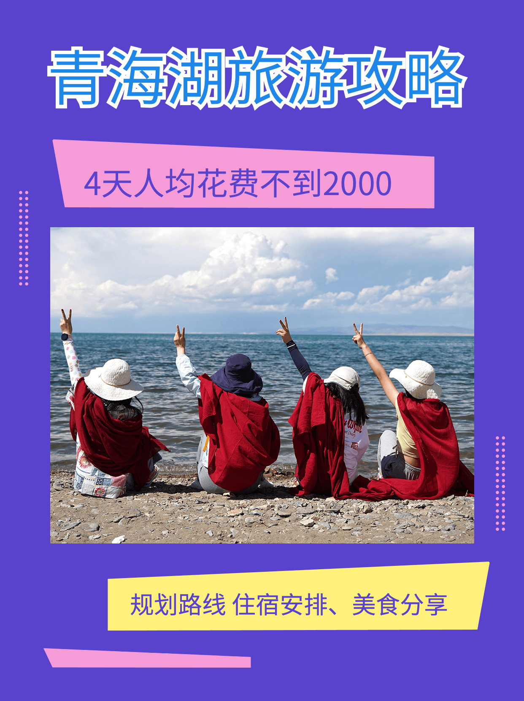
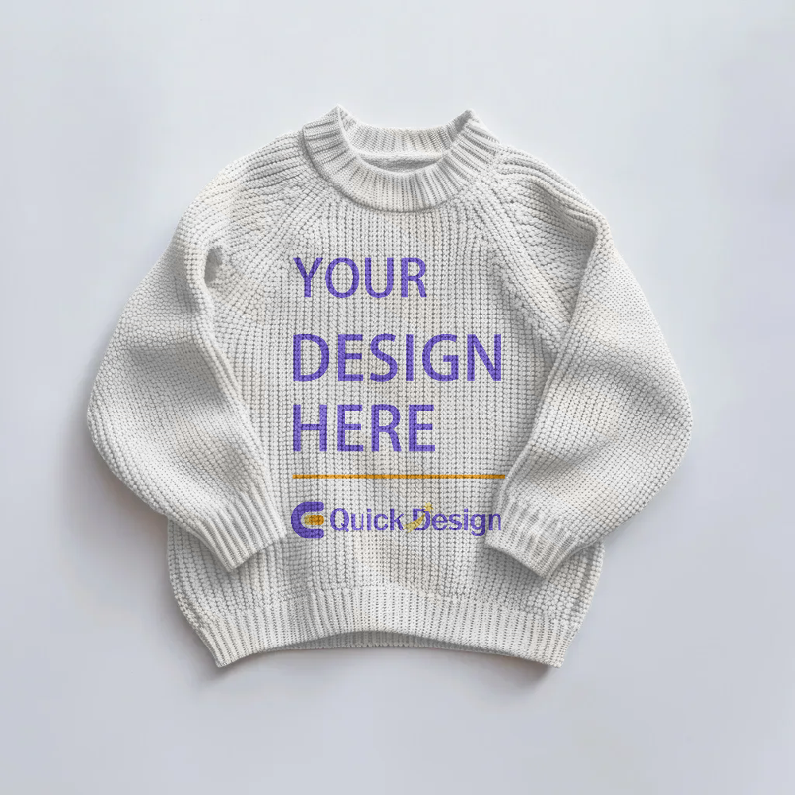

智能海报生成
一、产品
本项目解决的是日常运营里「同一套视觉模板，要反复换内容」的麻烦：交付物可能是商品主图、活动海报、落地页切片、门店物料或广告位配图等，形式不一，但共性是版式大体不变，只变标题、卖点、价格带、商品静态图与装饰元素。大促、上新、门店拉新、季节与垂直品类活动皆如此。手工在工具里一张张改，既慢又容易和规范跑偏；交给设计排期，又很难跟上运营节奏。
产品侧把这类工作抽象成可复用的版式模板 + 数据驱动出图：运营或增长同学只要维护结构化信息（文案、图片地址、活动参数等），就能在统一视觉规范下批量得到可直接投放或再微调的成品图，减少重复劳动，也让「品牌安全区、字体层级、主色」等要求有稳定落点。
典型需求场景包括：
- 电商与本地生活：商品静态图、主图、活动 KV、落地页配图、店铺氛围图，上新频繁、SKU 多、需要同一视觉多变量。
- 营销节点：节日、大促、联名等短期活动，时间紧、物料数量大。
- 内容团队：社媒配图、渠道投放素材，在统一模板下快速试稿与迭代。
- 与设计协作：设计定版式与规则，业务侧自助换内容，降低来回改稿成本。
二、Demo
以下为营销海报示例的导出效果；工程内对应目录与 skia-macos 仓库中的
projects/* 一致。本站静态资源位于
resource/pro6/ 下（与仓库目录同名对齐），便于与现有素材库一并托管。

projects/trip/projects/sunscreen/projects/food/projects/spring/projects/dessert/projects/cup/projects/horizontal/
projects/clothes/三、技术方案
实现侧对应开源仓库 skia-macos（目标平台 macOS），要点如下。
- 图形与协议：以 Skia 为图形栈；用 JSON 协议描述画布、素材与文本样式，由引擎解析后导出 PNG / JPEG。
- 代码结构：大致分为渲染编排、各类型 Renderer、文字动画与导出等模块，职责拆分便于扩展新元素与输出路径。
-
构建：CMake、C++17；根目录
./build.sh支持--debug/--release。 -
文档：协议、文本布局、动画与测试等见仓库
docs/，例如PROTOCOL.md、TEXT_RENDERING.md、ANIMATION.md、TESTING.md。 -
示例工程：位于
projects/，与 Demo 图注中的各projects/*目录一致。